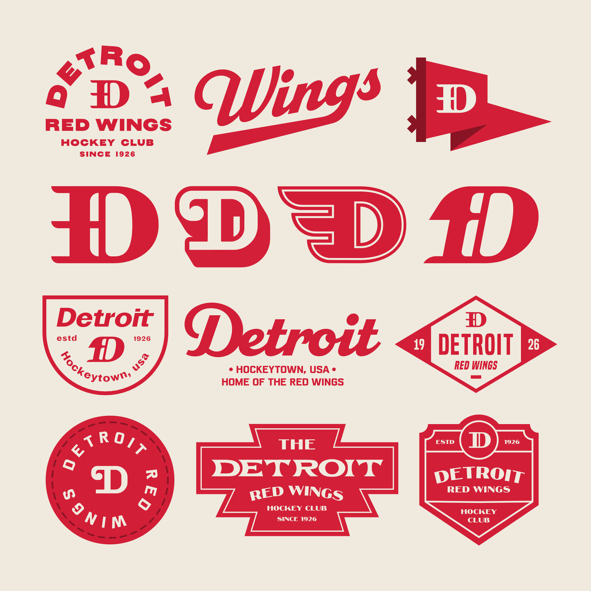
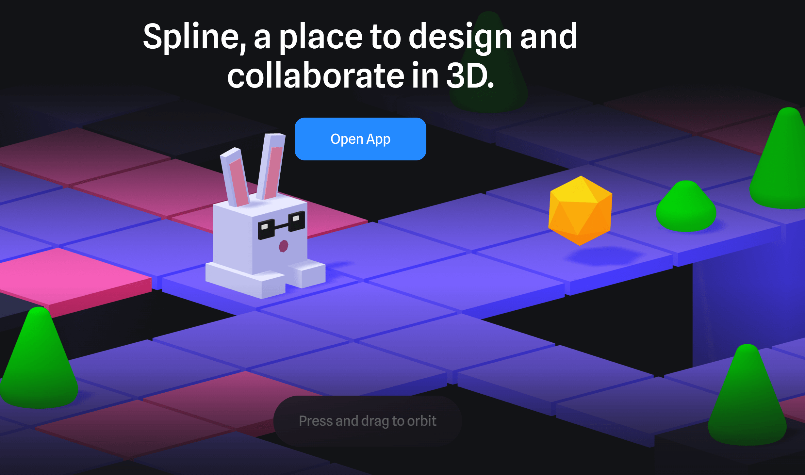
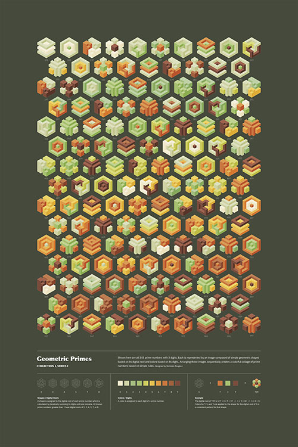
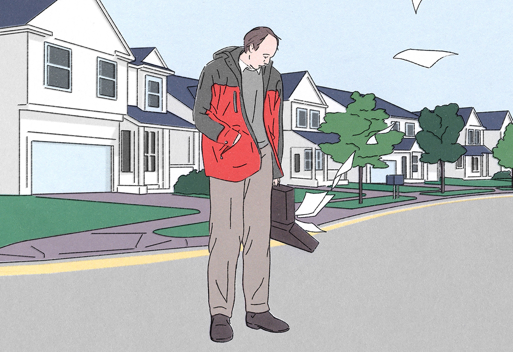
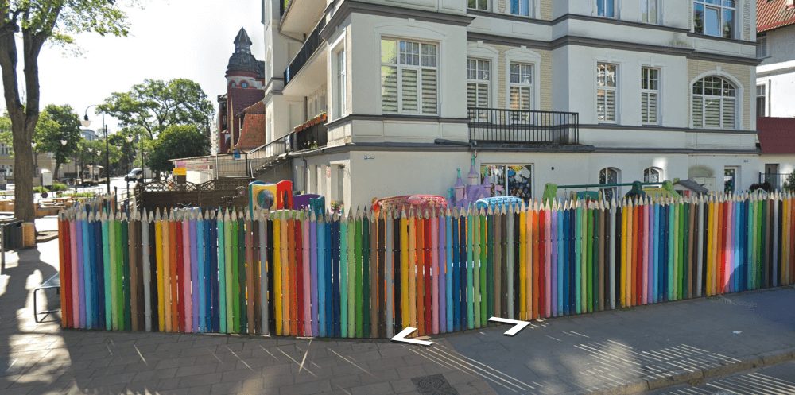
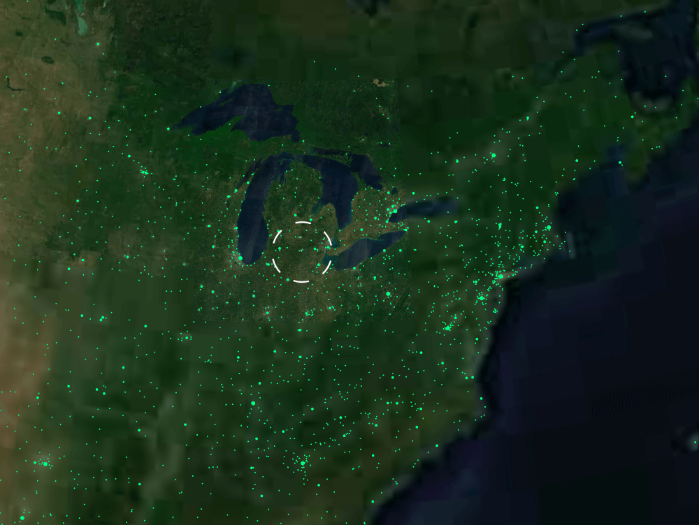

week 05 of 2023

Luc Suave creates cool logos and badges. Discovered through an article highlighting his work using Affinity Designer. Even though I teach Adobe products, I prefer using Affinity products in my own work.
I was busy last weekend with project and didn’t get the post put together. That’s fine. I knew I would probably be inconsistent with these things. Plus, for now, I’m pretty sure I’m the only aware of these things even existing. Nothing wrong with that, these are mostly for me anyway.
I’m having fun combing through the last few weeks of clipped content and saved bookmarks. There is a lot of good stuff here. Some of this would probably have gotten lost if I hadn’t taken the time to go back through and organize them. See, there is a purpose to this project. Cool.
so, I made something
This is an embed of something you will find over on my art journal. There’s a convenient link to jump over there to see what else I’ve been up to, if you are so inclined.
Seems like I rarely find the time to make something these days. It isn’t much, just a new approach to my links homepage. The challenge was to build a sliding page with scroll-snap for each section. There’s a persistent navigation list to each section. It isn’t much and I probably won’t continue using it, but, still, fun to have made something interesting.
Here’s the colored version:

Here’s the minimal version. Think I like this one better:

web design stuff
Speaking of web design, a good reminder that front-end is so much more than building designs by Andy Bell. Such a fun trip down nostalgia-lane with web design mockups built in Photoshop and then hacked together in code. His breakdown of the process of mapping things out and writing semantic markup is extremely similar to how I go about putting together a functional page.
Also, Every Layout seems quite intriguing. It is a system (maybe) for writing good clean code that utilizes the power of the browsers. There are free rudiments and axioms to start with and a full package for $69. I dig the bold minimal style of the site.
The Neurodiversity Design System is a set of principles for building websites that support neurodivergent learners. Good collection of simple rules to help with accessibility, which helps everyone, not just neurodivergent users.
other design stuff
There are plenty of color scheme generators out there. Palette Pro is the newest one that I’ve found. It is powerfully simple and clean. It works pretty well too.
Visual design rules you can safely follow every time from Anthony Hobday is a good set of notes on how to create functional design elements. It is focused on web design but the concepts work perfectly well with print as well. He has other interesting side projects that I will be exploring very soon. Many of these resonate strongly with me.
stuff i want to dig into deeper
Creativity as a system by Kazden Cattapan is the sort of thing I really like thinking about. My interests always seem to fall back to the nuances of the creative process. I haven’t incorporated these ideas into my maps of concepts yet but will be diving in soon…I hope.
Lab Notes by Alexander Obenauer is a collection of thoughts and processes related to personal computing and the “operating system of the future”. So many good things related to computer science but also how we use our technology. The site is pretty well designed too.
Spline looks to be an intriguing 3D modeling app that marries collaboration and functional tools together into an easy to use system. I’m currently teaching 3D modeling using the overwhelmingly complex beast known as Autodesk Maya. I like these smaller projects moving the tools forward in simpler ways. You aren’t going to make Avatar with this but you might still be able to create cool interactive pieces for web or an app.

visual inspiration
This Geometric Primes series of posters by Nicholas Rougeux is so visually captivating. He’s working with a simple mathematical setup to create neat visual forms. The ordered approach satisfies my designer side and the visual variations make my artist side happy.

Nicholas has so many more exceedingly cool projects on his site. Many projects have posters you can order. If only I had the money and wallspace to buy all of them.
I find the softly surreal images of Lucas Burtin to be captivating. That’s about it.

i think we’ve all had days like these.
random fun web experiments
I love the Wonders of Street View from Neal.Fun. Just hit the Random button in the upper-right corner and you will be taken to some interesting place on Google Street View. In five minutes, I’ve visited melting houses, a hut in Antarctica, a bear eating fish in Russia, and a giant chest of drawers in North Carolina.
Here’s a colored pencil fence from Poland.

simple little thing but now i want to go back to poland, just to see this.
One I’ve used in the past, but recently rediscovered: radio.garden. It is a giant spinning globe with hotspot links to streaming radio stations around the world. A simple click and you can be listening to techno in Berlin or zen music from Japan. The interface is pretty awesome too.

stations along the east coast and midwest of the united states.